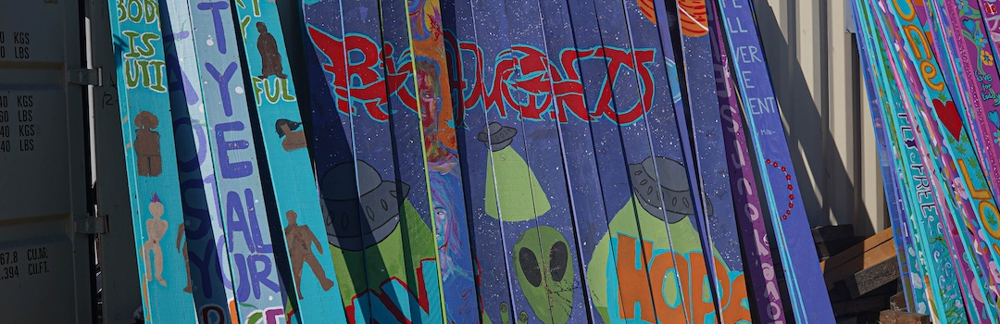
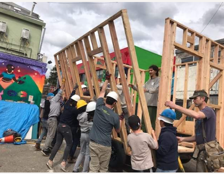

Tiny Village Blueprint

Learn More
We have partnered with Latitude High School to develop materials that will encourage schools NGO's and other grassroots groups to build tiny house villages with and for unhoused people.
The site contains resources for village planning in the classroom, navigating district and county policy, building momentum through the media, community outreach, and more.